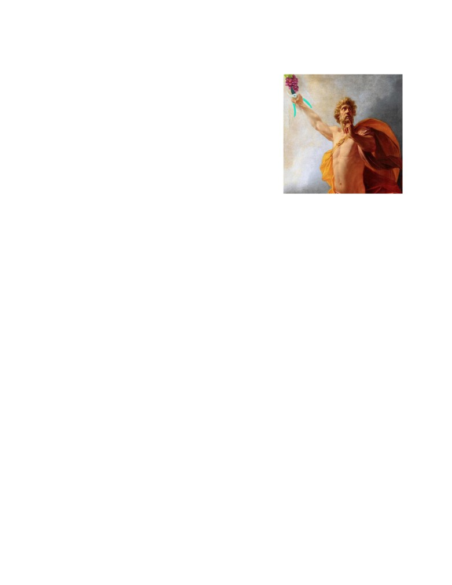

Prometeu, român plecat la muncă în Italia
Mulți români pleacă în țări străine în căutarea unui trai mai
bun. Unii pleacă să muncească și trimit bani acasă, la familii, alții
pleacă să muncească și se stabilesc cu familie cu tot în afara
granițelor. Alți români, precum locatarii orașului Cajvana din
Suceava, muncesc printre străini și aruncă toți banii câștigați într-un
nesfârșit concurs de “Cine are cea mai mare casă în care nu
locuiește nimeni”.
Printre toți acești români plecați se află și Prometeu. Despre
Prometeu vă pot spune în primul rând că Prometeu nu este numele
lui real, așa am ales eu să îl numesc, și că nu este stabilit cu totul în
străinătate și nici nu aruncă bani într-o casă goală și lipsită de
întrebuințare.
Prometeu locuiește în același oraș ca și mine și îl cunosc de mult timp, deși, nu am prea apucat
să îl văd la față, pentru că lucrează în Italia de șaptesprezece ani.
În mitologia greacă, Prometeu este considerat binefăcătorul oamenilor. Acesta este descris ca
fiind cel care a făcut omul din lut și a furat focul, ori din Soare, ori din forja lui Hefaistos, pentru a-l da
în dar omului, creației sale. Pentru aceste fapte, Zeus a ales să îl pedepsească pe Prometeu. L-a legat
veșnic de o stâncă pe muntele Kazbek unde zilnic un vultur uriaș îi devorează ficatul care se
regenerează miraculos în fiecare noapte, astfel chinul lui Prometeu fiind unul etern.
Prometeu cel din povestea noastră nu e un zeu, nu a făcut niciun dar supra-uman și nu suferă
veșnic, dar sper că până la finalul acestui text, motivul alegerii acestui nume o să fie evident.
Prometeu, precum mulți alți români, a plecat la muncă în străinătate pentru a putea asigura un
trai mai bun familiei lui aici în România. Prometeu lucrează cu struguri. Când l-am întrebat care este
meseria lui, nu a știut ce să îmi spună, nu din neștiință, ci din pluriperspectivism. El este om bun la
toate, el conduce tractoarele, el repară tractoarele, el face vinul și operează și întreține restul
mașinăriilor necesare în vie. Când ceva se strică, Prometeu e nevoit să rămână pe loc și să repare. Nu
contează cât durează, nu contează dacă trebuie să sară peste prânz sau să rămână să muncească mult
după ce a apus soarele, o zi de muncă de opt ore este o zi scurtă pentru Prometeu.
Alți români care lucrează în vie, colegi de-ai lui Prometeu, se întorc acasă imediat ce este gata
culesul de struguri, practic pleacă doar în transhumanță între august si ocotmbrie. Prometeu, însă,
rămâne la lucru. Lucrează la negru și își permite să vină acasă doar de sărbătorile de iarnă și de Paște.
Munca la distanță i-a schimbat radical viața lui Prometeu, el nu mai trăiește doar fizic departe
de familia lui, ci și emoțional. Singura zi de naștere a fiului său la care a putut fi prezent a fost prima,
ziua în care s-a născut. Prometeu ar fi vrut să se revanșeze prin a reuși să ajungă măcar la majoratul
fiului său, chiar dacă l-ar fi costat locul lui de muncă ca sclav în străinătate. Da, sclav, dar plătit cu bani
mai valoroși decât ai noștri.
Din păcate, epidemia mondială de SARS-CoV-2 l-a împiedicat pe Prometeu să mai ajungă
acasă. Zborurile anulate, închiderea granițelor, incertitudinea necesității de a sta în izolare și, în primul
rând, posibilul risc de a-și îmbolnăvi familia l-au determinat pe Prometeu să rămână în Italia. Oricum
nu ar fi fost un Crăciun adevărat în familie, fiica lui Prometeu este stabilită permanent în Anglia, nici ea
nu ar fi putut veni acasă.
Familia l-a uitat pe Prometeu, el va fi singur de sărbători în casa unde locuiește în Italia, va fi
singurul român din comuna unde lucrează. Soția lui Prometeu lucrează la un depozit în România care
se ocupă de export cu produse românești în Europa, inclusiv în Italia. Din tonele de cozonaci pe care le
va trimite în perioada sărbătorilor, niciunul dintre cozonaci nu este pentru Prometeu. Ea planifică o
excursie în Spania în viitorul apropiat. Banii lui sunt banii casei, banii ei sunt banii ei.
Ultima dată când m-am întâlnit cu Prometeu, eram și eu plecat la cules de struguri în Italia, era
ziua lui. I-am pregătit o cină simplă, o pizza românească și un pahar de vin și l-am anunțat că îl
așteptăm în vizită. La ora 21, a venit la noi la ușă și ne-a spus că nu poate să stea la masă, abia
terminase munca pe ziua respectivă. I-am spus “Mergi și fă un duș, stai un pic, noi te așteptăm”. La ora
23 a venit iar la ușă, cu un schimb de haine, puținul lui păr încă ud și în mâinile lui mari, muncite,
pătate de ulei de motor și totuși curate, ținea o tavă; ne pregătise o prăjitură cu ciocolată.
Mama mea lucrează într-o cofetărie, era și ea cu noi, își petrece concediul în fiecare an la cules
de struguri în aceeași localitate ca și prometeu, doar la alt patron. Deși este înconjurată de prăjituri
zilnic la muncă, nu am vazut-o niciodată mușcând cu atâta plăcere dintr-o prăjitură precum am văzut-o
mușcând din prăjitura de la Prometeu gătită sincer dar în grabă.
În antiteză cu Prometeu, în acea zi groaznică de muncă pentru el, soția dumnealui a fost plecată
la un botez în numele amândurora. În locul mâinilor pătate de ulei de motor, manichiura proaspăt
făcută, în locul vinului fără etichetă, șampanie, în locul prăjiturii, tort, iar în loc de “Buongiorno!” și
“Tanti auguri!” era printre oameni care știau a spune “Bună ziua!” și “La mulți ani!”. Dar pe Prometeu
nu îl deranja, era chiar vesel.
Eu nu cred în niciun fel de zei, dar în seara aia, l-am văzut în fața mea pe adevăratul Prometeu,
imaginea sacrificiului, cel care a creat omul și a furat focul zeilor pentru a i-l da și care trăiește în afara
conștiinței omului, îndurând aceeași tortură zi de zi, vindecându-se miraculos noapte de noapte.